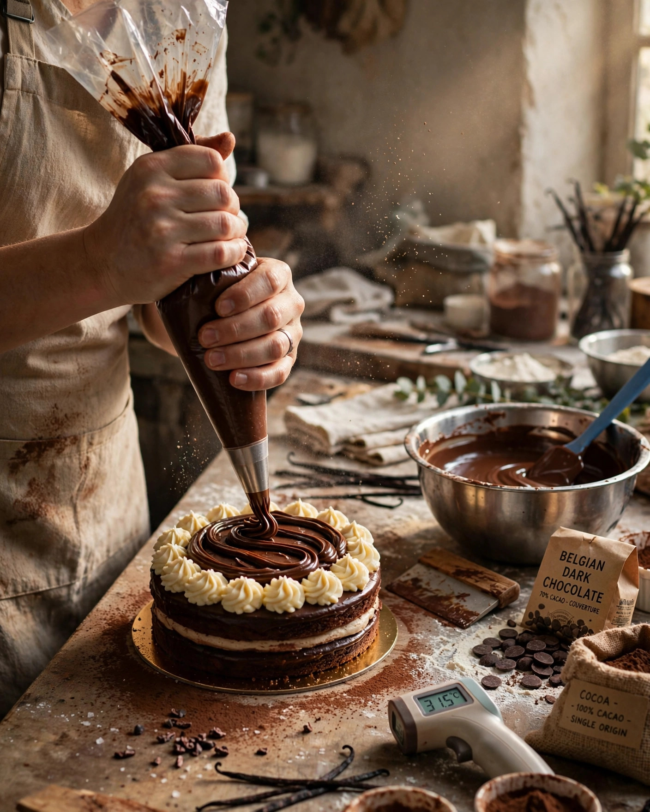

01
A fundadora & sua dupla bagagem
Camila Coelho é formada em jornalismo e especializada em gastronomia e alta confeitaria. Essa fusão traduz memórias afetivas em equilíbrio sensorial.
Nossa história
A história de quem escolheu transformar palavras e sabores em afeto diário para Presidente Venceslau.
Antes de dominar as dobras delicadas das massas e as temperagens do cacau, Camila Coelho contava histórias como jornalista. A CAMIS Patisserie nasceu desse encontro: a técnica clássica francesa e a doçura acolhedora das receitas de família.

Afeto autêntico, feito à mão no ateliê.
Amostra gerada por IADocumentação & trajetória
A verdade por trás da nossa bancada: sem adornos fictícios — apenas dedicação, formação sólida e respeito ao ofício.
Camila Coelho é formada em jornalismo e especializada em gastronomia e alta confeitaria. Essa fusão traduz memórias afetivas em equilíbrio sensorial.
A paixão pela cozinha nasceu nos aromas da tradição familiar e amadureceu com o estudo aprofundado da confeitaria clássica e de referências internacionais.
Sem concessões nem substitutos: a escolha é pelo autêntico chocolate belga Callebaut, ingrediente central das criações do ateliê.
As portas abriram oficialmente ao público em dezembro de 2025, em Presidente Venceslau – SP.
Inauguração do ateliê em Presidente Venceslau – SP.
Destaque no Portal Proezas: matéria especial sobre a CAMIS Patisserie.
Café, afeto e confeitaria — todos os dias, no ateliê e no Instagram.
Imprensa regional
Reportagem Portal Proezas • Setembro de 2026
“CAMIS Patisserie: o toque autoral de Camila Coelho reúne arte e sabor afetivo”
Matéria especial do Portal Proezas sobre a confeitaria artesanal e o café da CAMIS em Presidente Venceslau — o toque autoral de Camila Coelho, com arte e sabor afetivo.
Manifesto & filosofia
Na CAMIS Patisserie, a confeitaria não é uma linha de produção. Cada fatia servida carrega o tempo, o cuidado e o carinho de quem fez — para celebrar aniversários, reencontros ou simplesmente coroar a tarde.
Processos que não aceitam atalhos, para garantir textura e sabor em cada fornada.
Doces pensados para celebrar aniversários, reencontros ou coroar a tarde com dignidade.
Uma atmosfera intimista, desenhada para que cada morador e visitante de Presidente Venceslau se sinta em casa.
Ateliê & atendimento
Informações oficiais e canais diretos para encomendar seu doce artesanal ou acompanhar as fornadas do dia.
Presidente Venceslau – SP, Brasil
[Endereço físico exato — confirmar no Instagram]
Semana & fins de semana
[Horários dos turnos de café e fornadas — confirmar no Instagram]
Via Direct no Instagram @patisseriecamis
[Prazo mínimo de encomenda — confirmar com Camila]